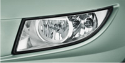
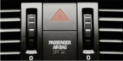
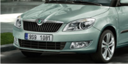

Izgled
Nova Fabia Combi
Fabia Combi sada nudi novi dinamičniji izgled prednjeg dijela vozila, promjenjenje materijale u unutrašnjosti, nove boje za vozilo i potpuno nove aluminijumske felge. Najveća inovacija je motor, koji vozilu daje fantastične parametre u vožnji i raspon mogućnosti.
Standardnu ponudu benzinskih motora čine provjereni 1.2 HTP / 44 kW i 1.2 12V HTP / 51 kW motori, kao i najnoviji turbo benzinski motori 1.2 TSI sa 63 kW i 77 kW zavisno od varijante
Raspon dizel motora je potpuno novi. Čine ga varijante četvoro cilindričnog 1.6 TDI CR snage 55 kW, 1.6 TDI CR snage 66 kW i 1.6 TDI CR snage 77 kW. Spomenuti dizel motori koriste Common rail tehnologiju i opremlljeni su DPF filterom za prečišćavanje ispušnih gasova. I dizel i benzinski motori ispunjavaju EU 5 norme ispušnih gasova.
Velike promjene su izvršene na sistemu projektor prednjih svjetala. Tu je dodatna neovisna sijalica za dugo svijetlo na unutrašnjoj strani kompletnog kućišta i modul projektor za oboreno svijetlo. Optički efekat površine prednjih svjetala je povećan i iluminacija pri vožnji je znatno poboljšana.
Spoljašnost
Završetak prednjeg dijela vozila je optički proširen horizontalnim linijama novog prednjeg branika sa redizajniranom rešetkom hladnjaka, modificiranim staklima i novim dizajnom prednjih svjetala i maglo farova. Ove promjene su učinile Fabiu Combi dužom za 8mm i sada njena dužina iznosi 4,247 mm
Raspon paleta boja je povećan sa novom metalik „Rallye“ zelenom bojom. Pacific plava (reflektivna) boja je također nova opcija. Ponuda uključuje i nove Aluminijumske felge Elba i Comet 16" , kao i nove poklopce Comoros za 14'čelične felge, odnosno Satellite za 15" čelične felge.
Unutrašnjost
Promjena unutrašnjosti znači veći komfor za putnike sa još boljom funkcionalnošću i kontrolom komandi u vozilu. Estetski, interijer je poboljšan sa novim grafičkim dizajnom kontrolne table, koja također nudi nove funkcije i komande.
Dizajn kontrolnih tipki klima uređaja je promijenjen. Tu je novi trokraki multifunkcionalni upravljač sa funkcijama za radio i telefon.. Domino i Chess materijali presvlaka sjedišta još su jedna novost
Udobnost

Udobnost i praktičnost
Unutar prostrane Fabia Combi Elegance dočekat će Vas udobni Chess crni ili Ivory interieri zajedno sa tekstilnim podmetačima. U verziji Ambient impresionirat će Vas Domino interier sa elegantnim poklopcima i ugodnim materijalima kontrolne table u Crno-Crno ili Crno-Srebrno-Sivoj kombinaciji. Praktičnost je reprezentovana Classic paketom opreme i Stone interijerom.
Maksimalna udobnost se postiže toniranim prozorima, automatskim klima uređajem Climatronic sa elektronskom regulacijom, električnim prednjim i zadnjim podizačima prozora i grijanim prednjim sjedištima koja su podesiva po visini za vozača i suvozača.
Perfektno muzičko iskustvo je osigurano, pogotovo pri dužim relacijama, sa radio uređajem Swing uz koji dolazi 8 vrhunskih zvučnika. Vozači će cijeniti Maxi DOT multifunkcionalni uređaj, tempomat i četiri kraka multifunkcionalni kožni upravljač.
El. podesiva vanjska ogledala
Vanjski retrovizori su standard u Ambient opremi opremljeni električnim grijanjem i upravljanjem.
Instrument tabla
Luksuzan izgled daju unutrašnjosti krom okvira brzinomjera i okretaja. Nadzorna ploča također možete pronaći više pokazivač MF.
Prednja svjetla za maglu i dnevno svjetlo
Prednja svjetla za maglu imaju novi oblik i dostupna, uključujući dnevna svjetla dnevno svjetlo (s deaktivaciju
Gume su pokrivene ratkapama Satelitska
Standardna oprema automobila s čeličnim felgama su velike kape sa novim satelitskim dizajn
Sigurnost
Maksimalna robusnost, maksimalna sigurnost
Sve veći zahtjevi za povećanjem aktivne i pasivne sigurnosti nastavljaju se iz dana u dan.
Škoda vozila uspjevaju da u potpunosti ispune ove zahtjeve kao i da prate ovaj trend.
U zemljama EU ABS sistem uključuje MSR i Dual Rate vakum-asistent kočionih sistema i dolazi kao standardna oprema već u baznim modelima Fabia i Fabia Combi. S druge strane, struktura ostalih paketa koji sadrže elektronske asistente stabilnosti se promijenila. Paket ABS Plus (ABS, MSR, Dual Rate, sistem za kontrolu pritiska u gumama) i ESP Plus (ESP, ABS, MSR, ASR, EDS, HBA, Dual Rate, sistem za kontrolu pritiska u gumama, start-up asistent) su od sada dostupni. Još jedna novost kod novog modela Fabije je sistem za pomoć pri kretanju uzbrdo već dobro poznat kod modela Octavia, Yeti i Superb-a.
Oprema može da uključi i zračne jastuke za vozača i suvozača kao i bočne zračne jastuke naprijed sa sistemom za upozerenje nevezanog pojasa za vozača. Na zahtjev vozilo se može opremiti sa zračnim jastucima za glavu.
Još jedna sigurnosna stavka uključuje tri tačke vezivanja sigurnosnih pojasa (podesivi po visini naprijed), naslone za glavu naprijed i nazad, prostor za postavljanje ISOFIX dječijeg sjedišta na zadnjem sjedištu te zaštitni sistem za protok goriva u slučaju nezgode.

Prednja svijetla
Projektor halogen prednja svjetla su doživila tehničke promjene i promjene u dizajnu. Za dugo svijetlo tu je sada posebna sijalica , dok oborena svijetla rade pomoću projektor. Optički aktivna površina je povećana što je poboljšalo kompletnu iluminaciju prednjih svjetala

Zračni jastuci za glavu
Nakon aktivacije zračni jastuci za glavu kreiraju zid čitavom stranom interijera. Na taj način oni štite ne samo putnike naprijed nego i putnike nazad u slučaju nezgode.

U slučaju nezgode
U slučaju nezgode upozoravajuće svijetlo i interno osvjetljenje se uključuju automatski, a sistem centralnog otključavanja se aktivira. Kako bi se spriječio rizik požara pumpa za gorivo se gasi i prekida dovod od spremnika goriva.

Zaštita pješaka
Fabia vozilo poštuju EU direktive vezane za zaštitu pješaka. Rizik povrede u slučaju sudara je dosta smanjen zahvaljujući prostoru između haube i fiksnih elemenata motora , Prednji branik dizajniran je tako da apsorbuje najveći dio energije u slučaju sudara.
Oprema

Škoda originalna dodatna oprema
Škoda vozila su dizajnirana za maksimalnu udobnost uključujući praktičnost i sigurnost. Kako bi na najbolji način Fabia ispunila sve Vaše potrebe i očekivanja, pripremili smo za Vas specijalnu ponudu Škoda originalne dodatne opreme..
Proizvodi u okviru originalne dodatne opreme imaju obilježja dugotrajnosti, sigurnosti, originalni tehnički rješenja i uvijek savršeno pristaju uz vozilo.
Držaći i nosači
Iako želite upotpuniti vaše slobodno vrijeme aktivno , vama je pored prostora potreban siguran i pouzdan prijevoz različitih sportskih stvari i prtljaga. Škoda originalna dodatna oprema nudi najbolja rješenja bilo da planirate ljetni ili zimski odmor.
U paleti naših proizvoda naći ćete nosač za bicikla prikopčan na kuku za prikolicu, držać sa opcijom zaključavanja, kutiju za skije i snowboarde ili interni držać za bicklo.
Škoda Fabia Combi može biti opremljena sa nvom opremom u Škoda originalnoj opremi - Škoda ski box. Ova kutija bez problema ima kapacitet za četiri para skija ili 2 snowboarda. Isto tako ona može služiti i za prijevoz drugog prtljaga. Tu je jako dosta prostora . Kutija ima volumen od 380 litara. U poređenju sa ostalim proizvodima ova kutija ima jednu veliku prednost. Peta vrata vozila nakon što je postavljena bez problema se normalno otvaraju kod svih Škoda modela.
Aluminijumske felge Bea
Aluminijumske felge će dodati poseban sportski izgled Fabia Combi osvježenom dizajnu. Pet kraka dizajn aluminijumski felgi Bear 6,5J x 16" je broj jedan u izboru originalne Škoda dodatne opreme za modele Fabia i Fabia Combi
Kuka za prikolicu
Treba Vam transport većeg tereta? Nekad jednostavno ne možete staviti sve u vozilo? Klasični dodatk je uklonjiva kuka za prikolicu koja Vam dozvoljava prikopčavanje prikolice (sa kočnicom) maksimalne težine 1200 kg, ili prikopčavanje prikolice (bez kočnice) maksimalne težine 500 kg
Zaštitna folija natrag na braniku
Trošak rub u rukovanju predmeta prevezli najosjetljivijih dijelova stražnjeg odbojnika.Transparentni zaštitni film, koji je izrađen od visokokvalitetnih materijala PU i otporan je na UV efekte, učinkovitu zaštitu.
Rešetka prtljažnika
Već postojeći sistem za pričvršćivanje tereta u Vašoj Fabiji je još više unaprijeđen sa Škoda originalnom dodatnom opremom. Kako bi razdvojili prostor između putnika i prtljažnika neophodna je rešetka.